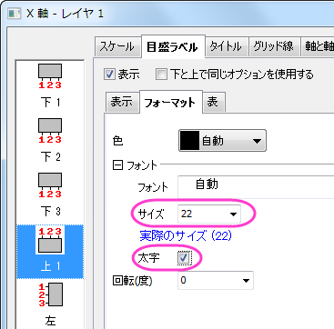

カラーインデックスデータのグループ化ボックスチャート
サマリー
Originは、素データからデータポイントと分布曲線付きのグループ化ボックスチャートの作図が可能です。
必要なOriginのバージョン: Origin 2015 SR0以降
学習する項目
このチュートリアルでは、以下の項目について説明します。
- 素データによりグループ化されたボックスチャートを作成
- シンボルカラーをインデックスしたデータプロットを追加
- 分布曲線の追加と編集
- 軸表を編集
ステップ
素データによるボックスチャートの作図
このチュートリアルは、チュートリアルデータプロジェクト（<Origin EXE フォルダ>\Samples\TutorialData.opj）と関連しています。
- Tutorial Data.opj を開き、Grouped Box with Index Color DataPointを開きます。
- Book5ワークブックをアクティブにします。
- 列Eから列Jを選択します。
- 2Dグラフギャラリーツールバーの左から6番目のボタンの下にある三角形のボタンをクリックして、フライアウトメニューを表示します。下図のように、グループ化したボックスチャート - 素データを選択します。
- Plotting: plotgboxraw ダイアログで、グループ番号を2にし、第1グループの行をコメントとし、第2グループの行をロングネームとしてセットします。これにより、ワークシート上のコメントとロングネームにによるX軸の行名を持つ、2つのグループと3つのグループに配置された列データでボックスチャートを作成します。
- OKボタンをクリックします。素データからのグループ化ボックスチャートは、以下のように2つのグループレベルで作成されます。
- グラフ内にデータポイントを追加するために、プロットをダブルクリックし、作図の詳細ダイアログを開きます。左パネルでLayer1レベルを拡張し、最初のプロットデータを選択します。
- ボックスチャートタブを選択し、種類を点列[左]+ボックス[右]にします。適用ボタンをクリックします。これにより作図の詳細ダイアログに2つのタブ、データとシンボルが追加されます。
- 分布曲線を追加するために、データタブを開き、分布曲線の種類を正均分布に設定します。また、ビンの位置揃えを右にし、曲線の配置を変更します。
- OKボタンをクリックします。データポイントと分布曲線が下図のように表示されます。
ボックスチャートと統計マーカーの編集
- ボックスのどれかをダブルクリックして、作図の詳細ダイアログを開きます。
- グラフグループタブを開き、境界色とボックスの色の推移を1つずつにします。
- 境界色の詳細の項目の
 ボタンをクリックします。推移リストエディタダイアログが開くので、最初の色をクリックし、赤を選択します。2番目の色は、灰色に設定します。OKをクリックします。
ボタンをクリックします。推移リストエディタダイアログが開くので、最初の色をクリックし、赤を選択します。2番目の色は、灰色に設定します。OKをクリックします。
- ボックスの色の詳細の項目にあるボタンをクリックして、推移リストエディタダイアログを開きます。最初の色をクリックして、カスタムカラーの定義を選択します。
：
- RGB値を設定します。右下にある赤, 緑, 青 の入力ボックスに255, 51, 51と入力し、OKをクリックしてダイアログを閉じます。
- 2つ目も同様にします。RGBの値は順番に143, 143, 143を入力し、OKをクリックしてダイアログを閉じます。OKをクリックして推移リストエディタを閉じ、設定を適用します。
- 次のステップで99%、1%、最大、最小の位置で表示されている記述統計マーカーを表示するかどうか設定します。
パーセンタイルタブを開き、縁の色を白にし、適用ボタンをクリックします。グラフの背景も白なので、最大、最小、99%、1%は非表示になったように見えます。
 |
パーセンタイルタブでは、形式のドロップダウンリストの最後の選択項目を選択することでマーカーを非表示に設定することも可能です。
|
- 線タブを開き、ヒゲの色とキャップの色を灰色にし、中央値線を白に設定します。
OKをクリックします。下図のようなグラフになります。
データシンボルと分布曲線の編集
- グラフをダブルクリックして、作図の詳細ダイアログを開きます。
- シンボルタブを選びます。サイズを5にし、形状を2 円を選択して内部を空白に設定します。
- 境界色をクリックしてドロップダウンリストから、インデックス: Col(B):Machinesを選択します。シンボルの境界色は列Bによりインデックスされます。Machineの値がA386とC334で異なる色が使用されます。
- シンボルの色がインデックスの場合、ダイアログにカラーリストタブが表示されます。ユーザ定義の推移リストを設定するには、カラーリストタブを開きます。カスタム推移リストを使用のチェックを付け、はじめのふたつの色を青、暗い空色にセットします。
- 分布曲線の色を編集するために、線タブを開き、分布曲線の色を灰色にします。
- OKをクリックしてダイアログを閉じます。

軸の編集
グループ化グラフは、複数行軸ラベル表をサポートしています。軸ダイアログにある軸と軸目盛 タブの対象の軸は、最後の行から始まります。例えば、下1、 下2・・・・下Nなど下から一番目の行は 下1 に対応しています。
- SEG 1、SEG 2、SEG 3の軸ラベル行を上X軸ラベルに移動するために、このラベル上でダブルクリックします。
- 下1アイコンの軸ダイアログが開きます。下1上で右クリックし、反対へ移動を選択します。
- 適用ボタンをクリックします。SEG 1、SEG 2、SEG 3の軸ラベルが上X軸上に表示されました。また、ダイアログの左パネルには上1アイコンが表示されました。
- 下2は下1に変更されました。下1アイコンを選択します。表タブに行きます。行数を3にセットします。適用ボタンをクリックします。グラフ上に3つの同じような目盛ラベルが表示され、それはら下 1, 下 2, 下 3となります。
- 一番下の目盛ラベル行を明るい灰色で着色するには、左パネルで下3アイコンをクリックし、表タブを開いていることを確認してから自動のチェックを外して自動のチェックを外してそれぞれ個別で編集できるようにします。塗り色を明るい灰色に設定し、表のレイアウトノードの下にある境界線(内側)のチェックを外します。
- 2番目の行は、2つ目のワークシートA386_CC.MIにある列Cのデータを使用してラベル付けします。下2アイコンを選択して、表示タブを開きます。タイプをデータセットからのテキストに変更し、データセット名のドロップダウンリストから[Book5]"A386_CC.MI"!C"N"を選択します。
- フォーマットタブを開き、自動チェックを外してから色を白に設定します。表タブを開き、以下のように設定します：
- 下1アイコンをクリックし、表示タブを開きます。タイプでデータセットからのテキストを選択し、データセット名で[Book5]"C334_CC.MI"!C"N"を設定します。これはC334_CC.MIワークシートの列Cを使うように伝えます。
- 表タブを開き、表のレイアウトを以下のように変更します。
- 上1をアイコンを選択し、表タブを開いてから上軸の表のレイアウトを以下の図のように設定します。
- フォーマットタブを開き、フォントサイズを22に変更して目盛ラベルは太字にします。
- 
- Y 軸に対して以下のように変更します。
- スケールタブ(垂直アイコン)：増分を5000に設定
- 目盛ラベルタブ >> 表示タブ(左アイコン) ：表示を科学的10^3に設定
- OK をクリックしてダイアログを閉じます。
- Y 軸のタイトルRangeを選択し、Deleteキーを押してこれを削除します。
凡例の更新とテキストオブジェクトの追加
- ボックスチャートの凡例上で右クリックし、凡例：ボックスチャートの要素を選択し、Enhanced Box Legend: legendbox ダイアログを開きます。データ以外の全ての要素のチェックボックスのチェックを外します。
- OKボタンをクリックします。凡例にはデータのシンボルのみ表示されます。凡例テキスト上でダブルクリックして、編集モードにします。凡例の1行目を削除します。凡例オブジェクトをドラッグして適当な場所に移動します。
- 凡例を囲う黒線を削除するには、凡例上で右クリックして、オブジェクトの表示属性を選択します。オブジェクトプロパティ ダイアログで、枠 タブに移動し、枠 を なしに設定します。
- Originはまだラベル表のタイトルはサポートしていません。しかし、手動でテキストオブジェクトを追加可能です。2番目の軸ラベル行の左側の空白部分で右クリックし、コンテキストメニューからテキストの追加を選択します。NA386= と入力します。そして、編集モードの状態のまま、A386を選択し、書式ツールバーの
 ボタンをクリックして下付き文字に変更します。選択してドラッグし、位置を整えます。
ボタンをクリックして下付き文字に変更します。選択してドラッグし、位置を整えます。
- 3番目のラベル行には、NC334=というテキストオブジェクトを追加し、C334を下付き文字に変更します。

最終的に、下図のようなグラフになります。
|
クリックして表ラベルを選択し、キーボードの矢印キーを使用してそれらを微調整することができます。
|